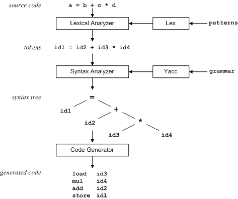

Backus-Naur notation (more commonly
known as BNF or Backus-Naur Form) is a formal mathematical way to
describe a language, which was developed by John Backus (and possibly
Peter Naur as well) to describe the syntax of the Algol 60 programming
language.
(Legend has it that it was primarily developed by John
Backus (based on earlier work by the mathematician Emil Post), but
adopted and slightly improved by Peter Naur for Algol 60, which made it
well-known. Because of this Naur calls BNF Backus Normal Form, while
everyone else calls it Backus-Naur Form.)
It is used to formally
define the grammar of a language, so that there is no disagreement or
ambiguity as to what is allowed and what is not. In fact, BNF is so
unambiguous that there is a lot of mathematical theory around these
kinds of grammars, and one can actually mechanically construct a parser
for a language given a BNF grammar for it. (There are some kinds of
grammars for which this isn't possible, but they can usually be
transformed manually into ones that can be used.)
Programs that do this are commonly called "compiler compilers" or
Parser Generators (see below).
BNF
is sort of like a mathematical game: you start with a symbol (called
the start symbol and by convention usually named S in examples) and are
then given rules for what you can replace this symbol with. The
language defined by the BNF grammar is just the set of all strings you
can produce by following these rules.
The rules are called production rules, and look like this:
The meta-symbols of BNF are:
::= meaning "is defined as"
| meaning "or"
< > angle brackets used to
surround category names.
The angle brackets distinguish syntax rules names (also called
non-terminal symbols) from terminal symbols which are written exactly
as they are to be represented. A BNF rule defining a nonterminal has
the form:
Now as a last example (maybe not the easiest to read !), here is the
definition of BNF expressed in BNF:
In
DL I had to use recursion (ie: DL can produce new DLs) to express the
fact that there can be any number of Ds. This is a bit awkward and
makes the BNF harder to read. Extended BNF (EBNF, of course) solves
this problem by adding three operators:
? :
which means that the symbol (or group of symbols in parenthesis) to the
left of the operator is optional (it can appear zero or one times)
* : which means that something can be repeated any
number of times (and possibly be skipped altogether)
+ : which means that something can appear one or
more times
So in extended BNF the above grammar can be written as:

So now you have your grammar file, the natural way of describing the syntactic structure of a DSL. Once you have a grammar, it's tedious work to turn it into a handwritten parser, and tedious work should be done by a computer!
A parser generator uses this grammar file to generate a
parser. The parser can be updated merely by updating the grammar
and regenerating. The generated parser can use efficient
techniques that would be hard to build and maintain by hand.
The purpose of this section is not to show or teach you how to build your own Parser Generator but to introduce you to them and what they offer you. Parser Generators are common tools that take your grammar file (for example, BNF) to generate a parser.
In computer science, a parser generator or a compiler-compiler or compiler generator is a tool that creates a parser, interpreter, or compiler from some form of formal description of a language and machine. The earliest and still most common form is a parser generator, whose input is a grammar (usually in BNF) of a programming language, and whose generated output is the source code of a parser often used as a component of a compiler.
The usual way to work with a Parser Generator is to write a grammar file. This file will likely use a particular form of BNF used by that Parser Generator. There is no standardization here so if you change your parser generator you will likely have to rewrite your grammar.
Once you have a grammar, the usually route is to use the parser generator to generate a parser. Most parser generators use code generation which allows them to output to different host languages. There is no reason why a parser generator shouldn't be able to read a grammar file at runtime and interpret it, then build a parser combinator (more in next section).
Generally, you treat the generated code as black box and don't delve into it. It is, however, useful to follow what the parser is doing - particularly if you are trying to debug your grammar. In this case, there is an advantage in the parser generator using an algorithm that is easier to follow, such as generating a Recursive Descent Parser.
The greatest advantage to using a parser generator is that it provides an explicit grammar to define the syntactic structure of the language you are processing. This is the key advantage of using a DSL. Since parser generators are primarily designed to handle complicated languages, they also give you much more features and power than you would get by writing your own parser. These features may require some effort to learn, you can usually start with a simple set and work your way up from there. Parser Generators may provide good error handling and diagnostics which can make a big difference when trying to figure out why your grammar isn't doing what you think it should.
In the last lecture we will look at ANTLR parser generator. We would recommend ANTLR to anyone who wants to explore parser generators. ANTLR outputs to a variety of host languages; ANTLR is a mature tool with excellent documentation; ANTLR is free and easy to download and install.
A typical parser generator associates executable code with
each of
the rules of the grammar that should be executed when these rules are
applied by the parser. These pieces of code are sometimes referred to
as semantic action routines since they define the semantics of the
syntactic structure that is analyzed by the parser. Depending upon the
type of parser that should be generated, these routines may construct a
parse tree (or abstract syntax tree), or generate executable code
directly.
One of the earliest (1964), surprisingly powerful, versions of
a compiler-compiler is MetaII, which accepted grammars and code
generation rules, and is able to compile itself and other languages.
Some experimental compiler-compilers take as input a formal description
of programming language semantics, typically using denotational
semantics. This approach is often called 'semantics-based compiling',
and was pioneered by Peter Mosses' Semantic Implementation System (SIS)
in 1978. However, both the generated compiler and the code it
produced were inefficient in time and space. No production compilers
are currently built in this way, but research continues.
The Production Quality Compiler-Compiler project at Carnegie-Mellon
University does not formalize semantics, but does have a semi-formal
framework for machine description.
Compiler-compilers exist in many flavors, including bottom-up rewrite
machine generators (see JBurg)
used to tile syntax trees according to a
rewrite grammar for code generation, and attribute grammar parser
generators (e.g. ANTLR can be used for simultaneous type checking,
constant propagation, and more during the parsing stage).
The first compiler-compiler to use that name was written by
Tony
Brooker in 1960 and was used to create compilers for the Atlas computer
at the University of Manchester, including the Atlas Autocode compiler.
However it was rather different from modern compiler-compilers, and
today would probably be described as being somewhere between a highly
customizable generic compiler and an extensible-syntax language. The
name 'compiler-compiler' was far more appropriate for Brooker's system
than it is for most modern compiler-compilers, which are more
accurately described as parser generators. It is almost certain that
the "Compiler Compiler" name has entered common use due to Yacc rather
than Brooker's work being remembered.

Other examples of parser generators in the yacc vein are ANTLR, Coco/R, CUP, GNU Bison, Eli, FSL, SableCC and JavaCC.
Parsers built using combinators are straightforward to
construct,
‘readable’, modular, well-structured and easily maintainable. They have
been used extensively in the prototyping of compilers and processors
for domain-specific languages such as natural language interfaces to
databases, where complex and varied semantic actions are closely
integrated with syntactic processing. In 1989, Richard Frost and John
Launchbury demonstrated use of parser combinators to construct
natural language interpreters. Graham Hutton also used higher-order
functions for basic parsing in 1992. S.D. Swierstra also
exhibited
the practical aspects of parser combinators in 2001. In 2008,
Frost,
Hafiz and Callaghan described a set of parser combinators in Haskell
that solve the long-standing problem of accommodating left recursion,
and work as a complete top-down parsing tool in polynomial time and
space.
In functional programming, parser combinators can be used to
combine
basic parsers to construct parsers for more complex rules. For example,
a production rule of a context-free grammar (CFG) may have one or more
‘alternatives’ and each alternative may consist of a sequence of
non-terminal(s) and/or terminal(s), or the alternative may consist of a
single non-terminal or terminal or the empty string. If a simple parser
is available for each of these alternatives, a parser combinator can be
used to combine each of these parsers, returning a new parser which can
recognize any or all of the alternatives.
A parser combinator can take the form of an infix operator, used to
‘glue’ different parsers to form a complete rule. Parser combinators
thereby enable parsers to be defined in an embedded style, in code
which is similar in structure to the rules of the grammar. As such,
implementations can be thought of as executable specifications with all
of the associated advantages.
Parser combinators, like all recursive descent parsers, are
not
limited to the context-free grammars and thus do no global search for
ambiguities in the LL(k) parsing Firstk and Followk sets. Thus,
ambiguities are not known until run-time if and until the input
triggers them. In such cases, the recursive descent parser defaults
(perhaps unknown to the grammar designer) to one of the possible
ambiguous paths, resulting in semantic confusion (aliasing) in the use
of the language. This leads to bugs by users of ambiguous programming
languages, which are not reported at compile-time, and which are
introduced not by human error, but by ambiguous grammar. The only
solution which eliminates these bugs is to remove the ambiguities and
use a context-free grammar.